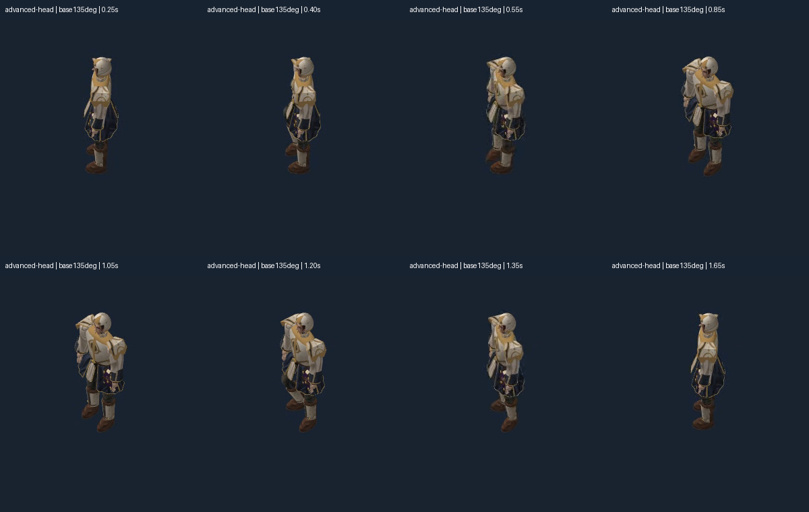

Source contacts, JSON transitions and 1,152/1,152 rendered comparisons pass. Godot is the shipping target; Pixi is the test harness. Two 0.6-second turns add or subtract 45° with alternating footsteps. This qualifies these turns from idle, including their return to idle. Walking/action transitions and arbitrary steering remain separate tests.
The first source version kept contacts but lost leg rotation around the limb, failing the final rotated-idle pose. The repaired version preserves that orientation. Both source versions and the original failure remain available. Existing 216 idle/walk/cast palettes are byte-for-byte unchanged.
Eight starting orientations, clockwise 0°, 45°, 90°, 135°, 180°, 225°, 270°, 315°. The left turn adds 45° counterclockwise; the right reverses it. Top row: 50px body axis. Lower row: 150px. Native 2400×500 geometry render, horizontally scrollable. The final canvas pixels exactly match the starting canvas for each outfit.
Top row follows the left turn; bottom row follows the right. Cropped without resizing. Foot lift is 8cm; hip height changes by at most 2.66mm. Planted-foot drift stays below 0.001mm. An instant rotation of the old planted feet produces 11.72cm of sliding and fails the same 2cm bar.

The pure JSON simulation owns the start and target headings, elapsed time and single completion event. The adapter selects the relative turn pose and applies the starting heading, then uses the committed idle heading. Twenty-three headless checks cover both directions at all eight headings, persistence, invalid input, overlapping requests and immutable state. Live overlapping clicks are rejected without freezing the active turn.
Eight independent Blender poses, eight views, two scales, three outfit/head conditions and three backgrounds pass the unchanged image thresholds. Wrong-pose and shifted-gear controls fail as intended. All 72 turn frames were rendered and audited. These videos do not establish production frame rate, responsive combat timing, complete garment motion, all outfit surface intersections or the full pilot.
Report · Receipt and limits · Preserved first failure · Repaired source contacts/endpoints · JSON checks · All image comparisons · Playback and live interaction checks · Live turn controls (local HTTP required)